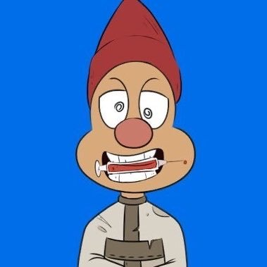

@StrawHatStew
Stew
Web3 enthusiast, NFT community builder, and host of What’s Stewing? Founder of Sol Suckers.
Weekdays · 6 AM EST
What’s Stewing?
A weekday morning show, Monday through Friday at 6 AM EST. It airs as an X Space — tune in from Stew’s X profile when he goes live.
A recent scheduled Space was titled “What’s Stewing? | Sol Asylum.” Space links change each episode, so the reliable door is his profile.
Open @StrawHatStew on XLive streams
Delusional OSRS Maxing
Old School RuneScape maxing streams. Stew multi-streams through PRISM across X, YouTube, Kick, and Twitch.
A recent X livestream from Nov 15, 2026 is still up as a broadcast. Individual broadcast links expire; his channel pages and PRISM are the lasting doors.
On the chain, in the community
Projects
-
Sol Suckers
Founder. An NFT collection on Solana — “Vacuum Cleaners on chain. It sucks!”
-
Battle Bros Club
Moderator for the Battle Bros Club community.
-
Sol Asylum
Part of the Sol Asylum team.
Find Stew
Links & contact
- X x.com/StrawHatStew
- YouTube youtube.com/@StrawHatStew
- Kick kick.com/strawhatstew
- Twitch twitch.tv/strawhatstew
- PRISM accessprism.com/u/strawhatstew
- Show X Spaces, weekdays 6 AM EST · @StrawHatStew
- Sol Suckers launchmynft.io/mint/solsuckers
- Battle Bros battlebros.io
- Sol Asylum @SolAsylum5150